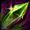
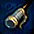

メニュー
トップ >> スキル >> ミニペット
ミニペットの種類
1次進化システム
2次進化システム
ミニペットスキル
アブソーブ・チェーン
「火・水・風・大地・光・闇・幻」の7種類がいます。
リフレクティングシャードから入手でき、確率は等倍でなく属性によって異なります。
ノーマル 火・水・風・大地
レア！ 光・闇
激レア！ 幻
通常のリフレクティングシャードは有効期限30日です。
[E]が付いてるものは銀行取引不可、その他は銀行取引可。
期限以上一緒にいるためにはシャードをシャインパウダーで磨く必要があります。
通常のシャインパウダーは1匹の期限延長、ハイパーシャインパウダーは所持する全ミニペットの期限を延長します。
それ以上変更する場合は「ガラスの色鉛筆(30GEM)」が必要。
この袋にシャードを入れると召喚された ミニペットの能力を袋の中に封印できます。
ミニペット1体を（それまでの成長を保持したまま）アイテム化できます。
その後、いつでも必要な時に袋を開けると対象のミニペットを再召喚可能。（1度限り）
再召喚時、ミニペットの期限が30日間延長されます。
※例えば残り15日時点のペットを袋に入れて取引、同日に別キャラクターで開封した場合は残り期限は45日となります。
同条件で10日後に開封した場合は残り35日、20日後は残り30日となって召喚されます。
「覚醒の種」は使うと餌をそれ以上付与できないが、覚醒の果実は使ってもペットのレベルをその後も上げられます。
覚醒の種は農村ガリムト(13,78)で入手できます。


例えば光ペットのスキルの場合以下のような強化が行われます。
[覚醒前]

[覚醒後]

※覚醒の種の強化量はさらに低いです。
※ミニペットの属性ダメージの強化のみで、回復量やステータスが上がるといった強化は無し。
進化したミニペットは召喚された時の「基本型」から「精霊型・自然型・神霊型」3系統のいずれかに分かれます。
さらに上位の新しいスキルを覚えられるようになり、スキルが増えていきます。
餌（装備など）を与えることでレベルが上がります。
要求レベルの高いアイテムほど経験値の多い餌になり、水色アイテムは2倍、Uアイテムは20倍、SUアイテムは40倍の経験値となります。
部位によるおおまかな餌の分類は以下。
【精霊型】武器
【自然型】鎧､足､手袋､腰､背､兜
【神霊型】首､冠､手首､耳､刺青､指､爪
また経験値を大幅に増やす課金アイテムがあります。
【精霊型】活動の破片DX
【自然型】推敲の羽DX
【神霊型】シンとリンのおもちゃDX
各190GEMで1セット10個。1回当たり5万経験値。
レベル100にするためには1666500EXP必要なので、課金アイテムで34回。

スキルの一覧はミニペットスキル一覧より確認できます。
進化するとボーナスが付きます。
その種類の餌の比率が99～100％の場合にはそれ以下の比率の場合よりもボーナスが高く付きます。
この比率は進化後に比率を変えると変わります。
進化直後98％だったミニペットでも99％になれば性能が上がります。
比率99～100％時の進化ボーナス
* 神霊型:｢全ペットスキル＋1｣
* 自然型:｢ペットスキル発動率＋0.10％｣
* 精霊型:｢ペットスキルダメージ＋50％｣
Lv100になり、スキルが振れない状態でポイントが余ると残余ポイントボーナス(特殊スキル)が発生します。
特徴は以下。

ミニペットを合成することで、さらに進化した2次進化ミニペットを入手できます。
また、Lv30未満の基本型ミニペットのみに使用できる、ミニペットのレベルを一気に100まで
上昇させてくれる アイテム「成長の呪文書」をアウグスタのNPC「クロネ」より入手できます。
【用意するもの】
・進化させたいレベル100のミニペット1体 (1次進化のペットか2次進化のペット)
・「生贄」とするレベル100のミニペット1体(1次進化のペットのみ)
※「生贄」とするミニペットは「進化」するミニペットに吸収され、消滅します。
【合成方法】
①「神聖都市アウグスタ」のNPC「クロネ」(62.103)に話しかけ項目「6）」を選択します。
※NPC「クロネ」は13時から23時のみミニペットの合成等を行えます（※2019現在、曜日不問）
②「ミニペット合成ウィンドウ」の左側に「進化させたいミニペット」をセット。

③「ミニペット合成ウィンドウ」の右側に「生贄にするミニペット」をセット。
※同じ属性のミニペットはセットすることはできません。
※ペットの期限は不問。

④ 任意で「変異促進剤」を使用する場合は、「変異促進剤」をセット。
※「変異促進剤」を使用して「突然変異」のミニペットを入手した場合、
「突然変異」のミニペットと「合成した」ミニペットの2体を入手することが出来ます。
※「変異促進剤」を使用せず「突然変異」のミニペットを入手した場合は、
「突然変異」のミニペットか2次進化ミニペットのどちらかを選択で入手となります。
※変異促進剤はキャンペーン等で入手可能。

⑤「合成」ボタンを押すと2次進化ミニペットを入手。
※合成された2次進化ミニペットは、「素材」「生贄」それぞれのミニペットの有効期限が合算されます。
※有効期限のないミニペットも合成が可能ですが、約60秒間活性化し、その後非活性状態となります。
2次進化ミニペットは「進化させたいミニペット」の属性及び進化型(精霊/自然/神霊)を引き継ぎます。
また、「生贄にするミニペット」の所持スキルの中から引き継ぎ可能なスキルをランダムで2個引き継ぎます。

2次進化合成の際に極めて稀に「突然変異ミニペット」が出現する場合があります。
また、合成する際に「変異促進剤」を使用することで「突然変異ミニペット」の出現率を上昇させることが可能です。

進化ボーナスも倍になります。
神霊型:｢全ペットスキル＋2｣
自然型:｢ペットスキル発動率＋0.20％｣
精霊型:｢ペットスキルダメージ＋100％｣
違うのは進化ボーナスだけです。進化の巻物を使うと進化ボーナスが変わります。
突然変異ミニペットを合成に使うことはできません。
○ ペット合成で突然変異が生まれる確率は約0.1%
○ 陰と陽の出現率は等しい
○ 光と闇限定を混ぜた時のみ確率0.2%
○ 光/闇のシャードからの出現率：12.5%(8回に1匹)
○ 変異促進剤は突然変異生成率+10%(1.1倍ではない)
ミニペットの配列次第では特殊な効果を得られることがあります。
詳細はミニペット合成スキル一覧より。
[参考]ミニペット(公式サイト)
[参考]ミニペット合成システム(公式サイト)
ミニペットシステム

便利アイテム「リフレクティング･シャード」を使うことで一定期間冒険のサポートをしてくれます。
「火・水・風・大地・・・」等の属性ごとに異なるスキルが使えます。
進化させることでペットを強くしたり、取り込むことで自身を強化することもできます。
※一種類のミニペットにつき10回まで取り込み可能。
ミニペットの種類
1次進化システム
2次進化システム
ミニペットスキル
アブソーブ・チェーン
ミニペットの種類
「火・水・風・大地・光・闇・幻」の7種類がいます。
リフレクティングシャードから入手でき、確率は等倍でなく属性によって異なります。
ノーマル 火・水・風・大地
レア！ 光・闇
激レア！ 幻
通常のリフレクティングシャードは有効期限30日です。
[E]が付いてるものは銀行取引不可、その他は銀行取引可。
期限以上一緒にいるためにはシャードをシャインパウダーで磨く必要があります。
| アイテム名 | GEM | 効果 | |
|---|---|---|---|
| リフレクティング・シャード | 600 | ・有効期限30日 ・ランダムに1体召喚 |
|
| ミニ・リフレクティング・シャード | ？ | ・有効期限7日 ・ランダムに1体召喚 |
|
| ミニリフレクティング・シャードLite |  |
？ | ・有効期限3日 ・ランダムに1体召喚 |
通常のシャインパウダーは1匹の期限延長、ハイパーシャインパウダーは所持する全ミニペットの期限を延長します。
| アイテム名 | GEM | 効果 | |
|---|---|---|---|
| シャインパウダー |  | 700 | ・指定した1体の保有期間を30日間延長できる |
| ハイパーシャインパウダー |  |
1500 | ・全てのミニペットの保有期間を30日間延長できる |
名前変更
ペットの名前は1度だけ変更可能。(半角10文字まで)それ以上変更する場合は「ガラスの色鉛筆(30GEM)」が必要。
取引
他プレイヤーとミニペットの取引を行うには「シールドポーチ(1500GEM)」が必要。この袋にシャードを入れると召喚された ミニペットの能力を袋の中に封印できます。
ミニペット1体を（それまでの成長を保持したまま）アイテム化できます。
その後、いつでも必要な時に袋を開けると対象のミニペットを再召喚可能。（1度限り）
再召喚時、ミニペットの期限が30日間延長されます。
※例えば残り15日時点のペットを袋に入れて取引、同日に別キャラクターで開封した場合は残り期限は45日となります。
同条件で10日後に開封した場合は残り35日、20日後は残り30日となって召喚されます。
強化(覚醒の果実)
「覚醒の種」(1億ゴールド)もしくは「覚醒の果実(950GEM)」を使ってミニペット1体を強化できます。「覚醒の種」は使うと餌をそれ以上付与できないが、覚醒の果実は使ってもペットのレベルをその後も上げられます。
覚醒の種は農村ガリムト(13,78)で入手できます。
例えば光ペットのスキルの場合以下のような強化が行われます。
[覚醒前]
[覚醒後]
※覚醒の種の強化量はさらに低いです。
※ミニペットの属性ダメージの強化のみで、回復量やステータスが上がるといった強化は無し。
1次進化システム
「リフレクティング･シャード」から召喚された「ミニペット」は、エサを与えてLv30まで成長すると進化をします。進化したミニペットは召喚された時の「基本型」から「精霊型・自然型・神霊型」3系統のいずれかに分かれます。
さらに上位の新しいスキルを覚えられるようになり、スキルが増えていきます。
餌（装備など）を与えることでレベルが上がります。
要求レベルの高いアイテムほど経験値の多い餌になり、水色アイテムは2倍、Uアイテムは20倍、SUアイテムは40倍の経験値となります。
部位によるおおまかな餌の分類は以下。
【精霊型】武器
【自然型】鎧､足､手袋､腰､背､兜
【神霊型】首､冠､手首､耳､刺青､指､爪
また経験値を大幅に増やす課金アイテムがあります。
【精霊型】活動の破片DX
【自然型】推敲の羽DX
【神霊型】シンとリンのおもちゃDX
各190GEMで1セット10個。1回当たり5万経験値。
レベル100にするためには1666500EXP必要なので、課金アイテムで34回。
スキルの一覧はミニペットスキル一覧より確認できます。
進化するとボーナスが付きます。
その種類の餌の比率が99～100％の場合にはそれ以下の比率の場合よりもボーナスが高く付きます。
この比率は進化後に比率を変えると変わります。
進化直後98％だったミニペットでも99％になれば性能が上がります。
比率99～100％時の進化ボーナス
* 神霊型:｢全ペットスキル＋1｣
* 自然型:｢ペットスキル発動率＋0.10％｣
* 精霊型:｢ペットスキルダメージ＋50％｣
Lv100になり、スキルが振れない状態でポイントが余ると残余ポイントボーナス(特殊スキル)が発生します。
特徴は以下。
2次進化システム
通称「ミニペット合成システム」ミニペットを合成することで、さらに進化した2次進化ミニペットを入手できます。
また、Lv30未満の基本型ミニペットのみに使用できる、ミニペットのレベルを一気に100まで
上昇させてくれる アイテム「成長の呪文書」をアウグスタのNPC「クロネ」より入手できます。
【用意するもの】
・進化させたいレベル100のミニペット1体 (1次進化のペットか2次進化のペット)
・「生贄」とするレベル100のミニペット1体(1次進化のペットのみ)
※「生贄」とするミニペットは「進化」するミニペットに吸収され、消滅します。
【合成方法】
①「神聖都市アウグスタ」のNPC「クロネ」(62.103)に話しかけ項目「6）」を選択します。
※NPC「クロネ」は13時から23時のみミニペットの合成等を行えます（※2019現在、曜日不問）
②「ミニペット合成ウィンドウ」の左側に「進化させたいミニペット」をセット。
③「ミニペット合成ウィンドウ」の右側に「生贄にするミニペット」をセット。
※同じ属性のミニペットはセットすることはできません。
※ペットの期限は不問。
④ 任意で「変異促進剤」を使用する場合は、「変異促進剤」をセット。
※「変異促進剤」を使用して「突然変異」のミニペットを入手した場合、
「突然変異」のミニペットと「合成した」ミニペットの2体を入手することが出来ます。
※「変異促進剤」を使用せず「突然変異」のミニペットを入手した場合は、
「突然変異」のミニペットか2次進化ミニペットのどちらかを選択で入手となります。
※変異促進剤はキャンペーン等で入手可能。
⑤「合成」ボタンを押すと2次進化ミニペットを入手。
※合成された2次進化ミニペットは、「素材」「生贄」それぞれのミニペットの有効期限が合算されます。
※有効期限のないミニペットも合成が可能ですが、約60秒間活性化し、その後非活性状態となります。
2次進化ミニペットは「進化させたいミニペット」の属性及び進化型(精霊/自然/神霊)を引き継ぎます。
また、「生贄にするミニペット」の所持スキルの中から引き継ぎ可能なスキルをランダムで2個引き継ぎます。
2次進化合成の際に極めて稀に「突然変異ミニペット」が出現する場合があります。
また、合成する際に「変異促進剤」を使用することで「突然変異ミニペット」の出現率を上昇させることが可能です。
2次進化ボーナス
進化すると攻撃も強くなります。2次進化後はLv上限が150になります。進化ボーナスも倍になります。
神霊型:｢全ペットスキル＋2｣
自然型:｢ペットスキル発動率＋0.20％｣
精霊型:｢ペットスキルダメージ＋100％｣
陰・陽ペットと確率
「陽」「陰」は精霊型でも、自然型でも、神霊型でも、同じスキルを覚えています。違うのは進化ボーナスだけです。進化の巻物を使うと進化ボーナスが変わります。
突然変異ミニペットを合成に使うことはできません。
○ ペット合成で突然変異が生まれる確率は約0.1%
○ 陰と陽の出現率は等しい
○ 光と闇限定を混ぜた時のみ確率0.2%
○ 光/闇のシャードからの出現率：12.5%(8回に1匹)
○ 変異促進剤は突然変異生成率+10%(1.1倍ではない)
ミニペットスキル
基本的なスキルはミニペットスキル一覧より確認可能。ミニペットの配列次第では特殊な効果を得られることがあります。
詳細はミニペット合成スキル一覧より。
アブソーブ・チェーン
詳細はアブソーブ・チェーンより。[参考]ミニペット(公式サイト)
[参考]ミニペット合成システム(公式サイト)